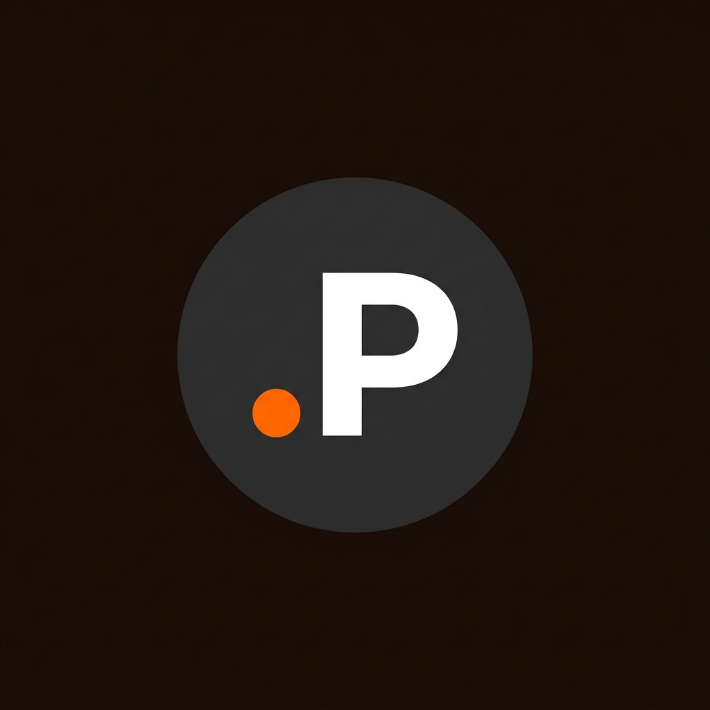

Proyectos a futuro
Objetivos profesionales
Mis proyectos a futuro, son poder seguir creciendo mis emprendimientos, tanto como mi agencia de diseño y desarrollo web como mi emprendimiento de venta de botines de fútbol. Con este curso lo que más quiero aprender y poder capacitarme, es la parte del backend. Ya que en los útlimos años me estuve enfocando únicamente en el front y sus buenas prácticas, sin embargo me di cuenta que para vender un servicio
Necesito a veces un back sólido, con su base de datos y API´S correspondientes. Por eso me metí al curso de Full-Stack.
